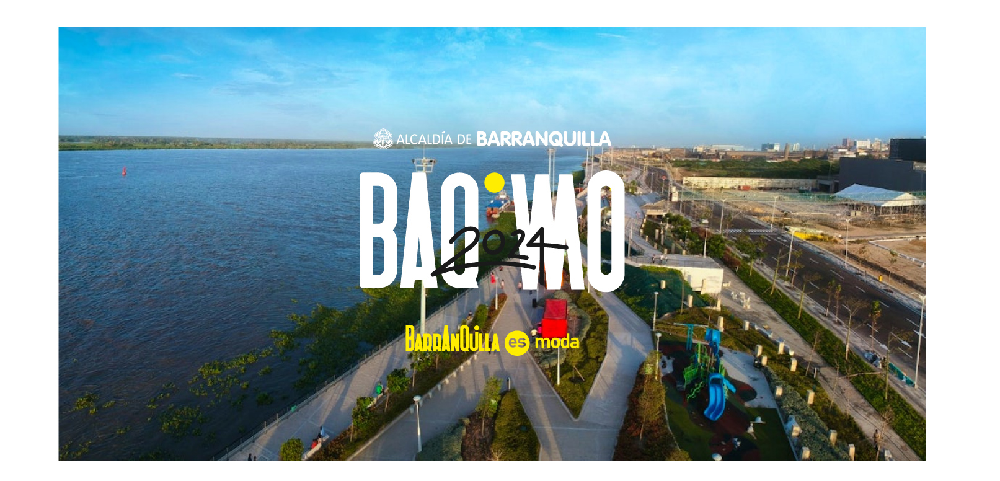
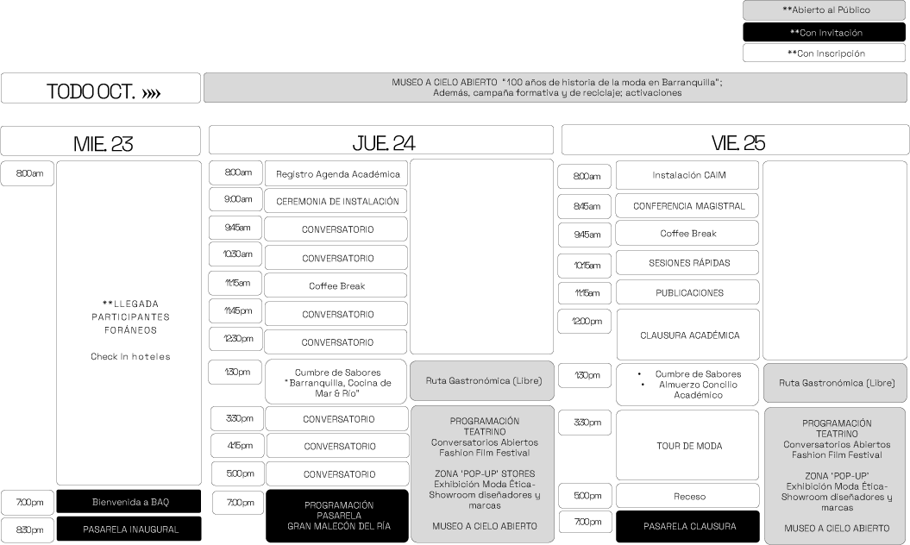

BARRANQUILLA ES MODA es un programa de ciudad liderado por la ALCALDÍA DISTRITAL, con el apoyo de IXEL, la
Universidad Autónoma del Caribe, la Gobernación del Atlántico, la empresas privadas y gremios de la ciudad,
que le apuesta al Macro Sector de la Moda como aliado estratégico para estimular la capacidad creativa, el
músculo empresarial y las políticas de empleabilidad, activando, además, el turismo de eventos culturales y de
negocios como motor para dinamizar la economía. Este programa es, además, punta de lanza para convertir a la
ciudad en una “Capital de MODA ÉTICA” en Latinoamérica, fomentando un consumo más consciente con el medio
ambiente e impulsando una oferta más alineada con los **pilares del modelo de sostenibilidad.
Es así como, durante el mes de OCTUBRE la moda se toma la ciudad …30 días llenos de eventos y actividades para
unir a todos los barranquilleros alrededor de esta industria y construir, a través de ella, una gran vitrina
internacional. Por ello, BARRANQUILLA ES MODA se convierte en la gran anfitriona de 13er Congreso
Latinoamericano de Moda IXEL MODA.
El evento contará con un Press Trip de los principales medios de comunicación, un free press promedio de
U$600.000 dólares y 3 componentes globales »»
**Los contenidos se encuentran en construcción, los panelistas, conferencistas y diseñadores están en proceso de invitación y confirmación.
Una parrilla académica con más de 20 speakers de reconocida trayectoria internacional que incluirá:
Además… una programación abierta a todo el público con espacios gratuitos al aire libre
…y un eje temático fascinante: Bio Re-Evolución
Experiencias de moda y cultura que abarcarán:
Activaciones comerciales y de Networking, con:
***programación en construcción sujeta a cambios y modificaciones, conferencistas en proceso de invitación y confirmación
El Gran Malecón del Río es el gran orgullo de los barranquilleros con más de 10 millones de visitantes (10.422.394) desde su apertura en julio de 2017 y más de 800 eventos y actividades culturales realizadas frente a la principal arteria fluvial de Colombia, es el sitio turístico más visitado de Colombia. Este ambicioso desarrollo urbano y natural cuenta con cinco kilómetros sobre la ribera del río Magdalena con hermosos paisajes del río y el Vía-Parque Isla Salamanca. Es el espacio ideal para disfrutar de experiencias al aire libre, en contacto directo con las riquezas naturales del entorno. Incluye corredor verde, parque para niños, ciclo rutas y una variada oferta gastronómica. https://granmalecon.com/
*** en construcción sujeto a cambios y modificaciones


Inscripciones:
nataliacantillo@gematours.com
inscripciones@ixelmoda.com
Patrocinios:
comercial@ixelmoda.com
Prensa:
prensa@ixelmoda.com
Redes sociales y medios digitales:
redessociales@ixelmoda.com